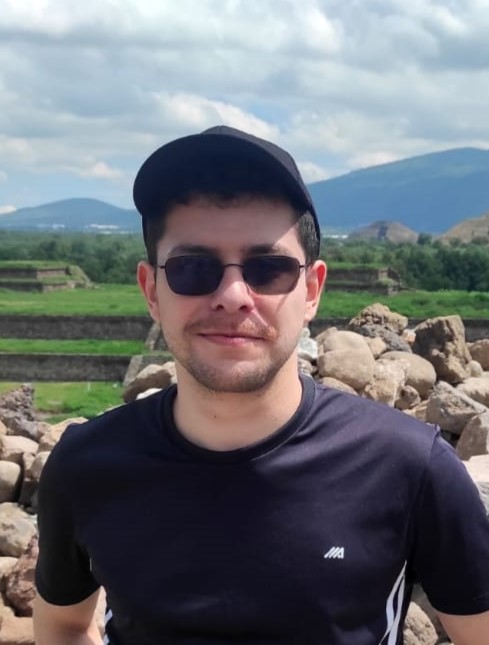
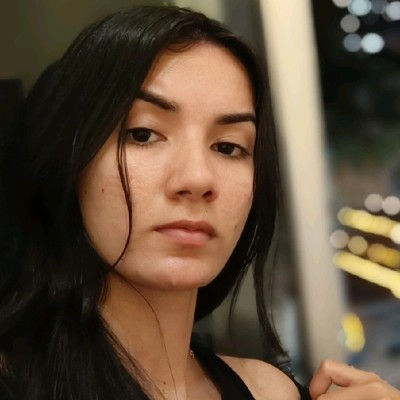
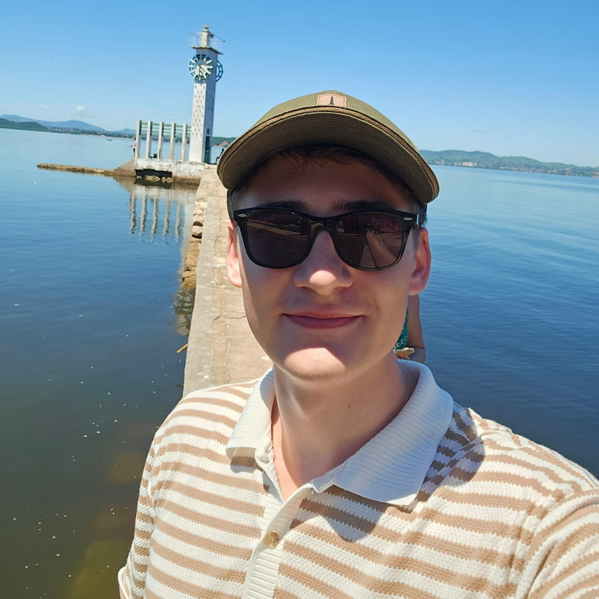
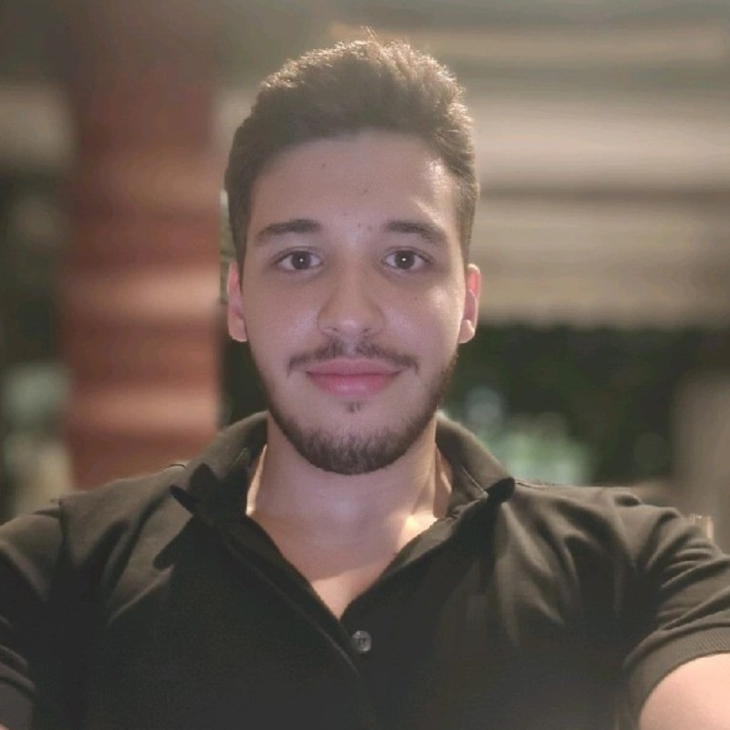
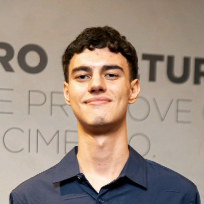

GAIA Lab
Início
Sobre
Pesquisa
Publicações
Cursos
Equipe
PT
Conheça a Equipe
Professor
Dario Oliveira
Professor e Coordenador do GAIA Lab
Doutor em Engenharia Elétrica, PUC-Rio
Sem itens correspondentes
Pós-Doutorado
Sem itens correspondentes
Doutorado

Danilo Lemos Cardoso
Assistente de Pesquisa
Doutorando, FGV EMAp
Erick Brito
Assistente de Pesquisa
Doutorando, FGV EMAp
Heitor Trielli
Assistente de Pesquisa
Doutorando em Matemática Aplicada e Ciência de Dados, FGV EMAp
Lívia Cereja Meinhardt
Assistente de Pesquisa
Doutoranda, FGV EMAp
Tomás Ferranti
Assistente de Pesquisa
Doutorando, FGV EMAp
Sem itens correspondentes
Mestrado
Gabriel Jacinto Pereira
Assistente de Pesquisa
Mestrando, FGV EMAp
Gustavo Danon
Assistente de Pesquisa
Mestrando em Matemática Aplicada e Ciência de Dados, FGV EMAp
Hanna Ferreira
Assistente de Pesquisa
Mestranda em Matemática Aplicada e Ciência de Dados, FGV EMAp

Janaina Neres Evangelista
Assistente de Pesquisa
Mestrando em Matemática Aplicada e Ciência de Dados, FGV EMAp.
João Alcindo
Assistente de Pesquisa
Mestre em Matemática Aplicada e Ciência de Dados, FGV EMAp
Lucas Westfal
Assistente de Pesquisa
Mestrando, FGV EMAp
Pedro Thomaz Conzatti Martins
Assistente de Pesquisa
Mestrando em Matemática Aplicada e Ciência de Dados, FGV EMAp
Raul Lomonte Figueiredo
Assistente de Pesquisa
Mestrando em Matemática Aplicada e Ciência de Dados, FGV EMAp
Rodrigo Gomes Hutz Pintucci
Assistente de Pesquisa
Mestrando, FGV EMAp

Thiago Franke Melchiors
Assistente de Pesquisa
Mestrando em Matemática Aplicada e Ciência de Dados, FGV EMAp
Sem itens correspondentes
Graduação

Antonio Joaquim Brych Mendes de Souza
Iniciação Científica
Graduação em Ciência de Dados e IA, FGV EMAp

Sillas da Rocha Costa
Iniciação Científica
Graduando em Ciência de Dados e IA, FGV EMAp
Sem itens correspondentes
Colaborador
Sem itens correspondentes
Alumni
Eduardo Vianna de L. F. Guimarães
Cientista de Dados, BNDES
Bacharel em Matemática Aplicada, FGV EMAp
Elias Rodrigues
Cientista de Dados Sênior, Radix
Doutor em Engenharia Mecânica, PUC-Rio
Juliana Carvalho
Doutoranda em IA, CNAM, Paris
Doutoranda em Ciência da Computação, CNAM
Luiz Luz
Engenheiro de IA Generativa, Dharma AI
Mestre em Modelagem Matemática, FGV EMAp
Pedro Soto
Pesquisador Científico em Vision-AD e AutoROB no L@BISEN
Doutor em Engenharia Elétrica, PUC-Rio
Sem itens correspondentes